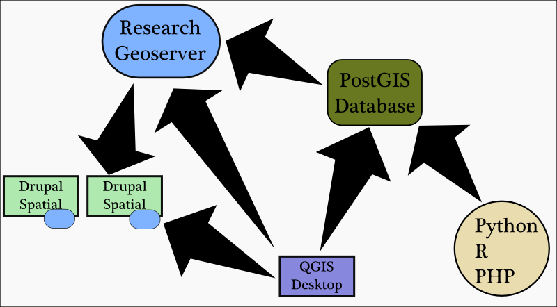
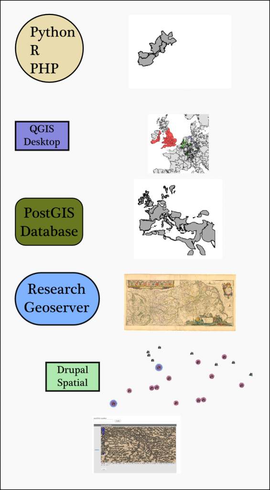

I have been engrossed in Drupal 7, lately, and it’s a good thing. Stanford has just officially announced the creation of Stanford Web Services, which along with developing and providing robust and sophisticated web services for the campus, will also provide Basic Site, a Drupal-driven web presence for Stanford departments and administrative units. Concurrent with this, and with the help of Digital Library Systems & Services (DLSS) and the Academic Technology Specialist program, I’ve been developing a Drupal-based spatial solution for smaller digital humanities projects as well as application in other areas. The Drupal component, though, is a single tier in a larger system, involving a DLSS-hosted PostGIS database and Geoserver that provide base layers and more complex spatial data.
The popularity of services such as Google Maps and Geocommons indicate that many projects do not need complex spatial data management and analytical tools in place to achieve good results. But if the need arises to do more, then any solution should provide robust and varied capacity to perform the necessary data manipulation that a scholar requires. As it stands, spatial humanities work tends to be an ad hoc affair, with Google Earth and ArcGIS and Tableau brought to bear on the same data depending on need and user preference, while presentation and collaboration are considered to exist in a separate space, requiring separate, and often custom, solutions.




The tiers of this system as data layers in a GIS.
What this system ends up looking like really depends on your perspective into it. My hope is that most users are able to engage meaningfully with all three aspects of their spatial data–creating spatially-aware nodes in Drupal, styling and loading files into Geoserver and actively engaging with the PostGIS spatial database either through interfaces or (preferably) some form of scripting. In such a case, the output, might be something like that seen above: A set of easily mutable spatial objects held in Drupal, changing through collaboration and served to a variety of audiences, overlaid on a series of raster and vector maps loaded directly onto the Geoserver (such as a georectified map from David Rumsey’s collection) along with changing PostGIS views and tables based on new and varied queries–the data from which is still conveniently displayed through Geoserver onto the Drupal site.
Many projects, though, will not need to access a spatial database. Some need only the basic functionality provided by a Drupal configured to take advantage of the various geospatial modules now available. On the other hand, a custom interface and complex existing code may only need a database. In these cases, such a tiered solution provides centralization of systems administration and, more importantly, opportunity to expand as research questions mature and available resources increase.
Beyond the pragmatic value of such a system, the emphasis on vibrant open source communities–especially Drupal, which is well-represented here at Stanford–provides the opportunity to support and extend features all along the stack. The wealth of Drupal modules available means that each instance can, with some effort, be customized for a variety of uses.
It’s my goal, in the coming months, to provide a variety of examples of how such a system can be readily adapted to a wide variety of projects, whether in the digital humanities or elsewhere. We are reaching a point of commodification of spatial data and tools. The wide acceptance and understanding of spatial objects and their uses–whether in traditional maps or more radical interpretations–signals a shift away from specialists building custom applications toward the development of a stable service architecture to support widespread use.